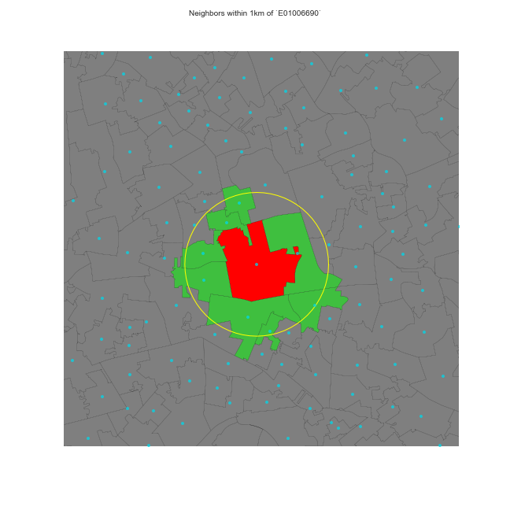
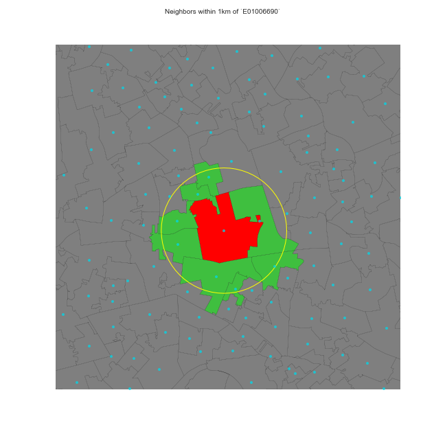

¶
What is a neighbor?¶
A neighbor is “somebody” who is:
Next door \(\rightarrow\) Contiguity-based \(W\)s
Close \(\rightarrow\) Distance-based \(W\)s
In the same “place” as us \(\rightarrow\) Block weights
…
{data-background=../figs/l05_queen.png}¶
Distance-based weights¶
Weight is (inversely) proportional to distance between observations
Inverse distance (threshold)
KNN (fixed number of neighbors)
…
{data-background=..//figs/l05_dist.png}¶
¶
 

Block weights¶
Weights are assigned based on discretionary rules loosely related to geography
For example:
LSOAs into MSOAs
Post-codes within city boundaries
Counties within states
…
{data-background=../figs/l05_block.png}¶
How much of a neighbor?¶
No neighbors receive zero weight: \(w_{ij} = 0\)
Neighbors, it depends, \(w_{ij}\) can be:
One \(w_{ij} = 1\) \(\rightarrow\) Binary
Some proportion (\(0 < w_{ij} < 1\), continuous) which can be a function of:
Distance
Strength of interaction (e.g. commuting flows, trade, etc.)
…
Choice of \(W\)¶
Should be based on and reflect the underlying channels of interaction for the question at hand.
Examples:
Processes propagated by inmediate contact (e.g. disease contagion) \(\rightarrow\) Contiguity weights
Accessibility \(\rightarrow\) Distance weights
Effects of county differences in laws \(\rightarrow\) Block weights
Standardization¶
In some applications (e.g. spatial autocorrelation) it is common to standardize \(W\)
The most widely used standardization is row-based: divide every element by the sum of the row:
where \(w_{i\cdotp}\) is the sum of a row.
¶

A course on Geographic Data Science by Dani Arribas-Bel is licensed under a Creative Commons Attribution-ShareAlike 4.0 International License.